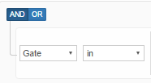

Section: Home User Management User Add
Назначение:
Секция Add позволяет добавить нового пользователя и назначить ему роль.
Для создания нового пользователя заполните поля
| Field | Description | Example |
|---|---|---|
| Login* | Логин в админ панели | @active_test |
| First Name* | Имя | John |
| Last Name* | Фамилия | Doe |
| Email* | Почтовый ящик | johndoe@test.com |
| Phone* | Телефон | +1234567890 |
| Gates | Настройка роли в зависимости от шлюза | Gateway for testing |
| Merchants | Настройка роли в зависимости от мерчанта | Test merchant |
| Accounts | Настройка роли в зависимости от аккаунта | Test acoount |
| Merchants Group | Настройка роли в зависимости от группы мерчантов | Test merchant group |
Пометка | Всегда заполняйте поля помеченные *
Скриншот :

Следующий шаг это выбор роли для пользователя
| Role | Description |
|---|---|
| Root | Самые высокие права доступа.. |
| Analyst | Отчеты доступны для просмотра. |
| Merchant administrator | Настройка мерчантов, аккаунтов. Создание пользователей. |
| Monitoring manager | Просмотр критических метрик. |
| Mportal Summary Report | Только данный отчет. |
| Mportal Custom Applications | Просмотр Платежной Пстраницы. |
| Mportal Edit Applications | Настройка ПП. |
| Mportal Create Applications | Создание ПП. |
| Account manager | Аккаунт менеджер - управление шлюзами, управление мерчантами, управление учетными записями, управление банком, но только для просмотра без изменений настроек. |
| MMS manager (FRS) | MMS менеджер FRS системы. |
| Project Manager | Функции менеджера проекта. |
| Accountant | Функции аккаунт специалиста. |
| mportal | Функции портала мерчанта. |
| Mportal Administrator | AАдминистратор мерчант портала. |
| Mportal Team Members Management Settings | Общее управление мерчант портала. |
| Mportal Accountant | Функции аккаунт специалиста мерчанта. |
| Mportal Custom Settings | Мерчант портал основные настройки. |
| Mportal General Settings | Мерчант портал все настройки. |
| Mportal Account Activation Settings | Мерчант портал активация аккаунта. |
| Mportal Money Transfer Settings | Мерчант портал управление финансами. |
| QA | QA настройки. |
| Mportal Analyst | Аналист мерчант портала. |
| Mportal Engineer | Инжинер мерчант портала. |
| Mportal Custom Dashboard | Мерчант портал пользовательская панель инструментов. |
| Mportal Custom Analytics | Мерчант портал пользовательская аналитика. |
| Mportal Email Receipts Settings | Мерчант портал почтовый ящик настройки. |
| Mportal Owner | Роль владельца мерчант портала. |
| Mid viewer | Просмотр MIDов. |
| Routing and cascading manager | Настройка роутинга и каскадинга транзакций. |
| Mportal Balance History | Просмотр балансовой истории. |
| Mportal Transactions Report | Просмотр отчета транзакций. |
| Mportal Transactions Details | Просмотр деталей транзакции. |
| Mportal Refund Void Settle | Полномочия для проведения данных транзакций. |
| Currency conversion manager | Возможность настройки конвертера валют. |
| Sales manager | Менеджер по продажам. |
| FRS Manager | Менеджер FRS секции. |
| Jobs Config Manager | Возможность изменения конфигурации. |
| Mportal Customers Report | Отчет Customers Report доступен. |
| Mportal Chargeback Report | Отчет Chargeback Report доступен. |
| Mportal Chargeback Ratio Report | Отчет Chargeback Ratio Report доступен. |
| Mportal Approve Ratio Report | Отчет Approve Ratio Report доступен. |
| Routing Viewer | Возможность просмотра роутинга. |
| Risk analyst | Настройки для риск аналитиков. |
| Privileged | Привилегированные функции. |
| VAT editor | Возможность изменения НДС. |
| OTP | OTP настройки. |
| White Label | Роли для White Label. |
| Use virtual terminal | FВозможность использовать виртуальный терминал. |
| Shared tokens manager | Возможность распределять токены. |
Пометка | Для выбора нескольких ролей используйте галочки.
Скриншот :

После выбора всех настроек нажмите на кнопку 
Section: Home User Management User List
Назначение:
Секция List позволяет найти пользователей.
Для поиска пользователей выберите роли 
Select the rule
| Rule name | Description | Screenshot |
|---|---|---|
| Gate | Поиск по шлюзу |  |
| Merchant | Поиск по мерчанту |  |
| Account | Поиск по аккаунту | |
| User | Поиск по пользователю | |
| First name | Поиск по имени |  |
| Last name | Поиск по фамилии | |
| Role | Поиск по роли |  |
| Поиск по почтовому ящику |  |
Для выбора нескольких ролей нажмите
Для удаления нажмите
Пометка | Вы можете использовать несколько ролей одновременно !
Пример
| Gate Name | Merchant | Account | User Name | Role | First Name | Last Name | Actions | |
|---|---|---|---|---|---|---|---|---|
| Test gateway | Test merchant | John Doe | root | John | Doe | johdoe@test.com | ||
| Live gateway | Bob Doe | Account manager | Bob | Doe | bobdoe@test.com |
Детали:
Для изменения настроек по пользователю .
Для удаления пользователя .